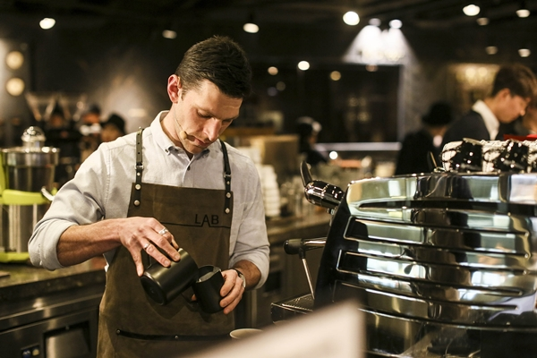

바리스타(Barista)는 이탈리아어로 바에서 커피를 만드는 사람을 뜻합니다.
넓은 의미로는 좋은 커피 원두를 고르고 로스팅하여 고객의 입맛에 맞는 다양한 커피를 만드는 사람을 부르는 말입니다.
국내에 바리스타라는 개념이 도입된 것은 1999년에 <스타벅스> 프렌차이즈가 한국에 들어오면서부터입니다.
특히 드라마 <커피프린스 1호점>이 방영되면서 대중적으로 바리스타라는 직업이 각인되었습니다.
바리스타의 전문 분야는 어떤 것들이 있는지, 바리스타는 어떻게 될 수 있는지 알아봅니다.
1. 바리스타 직업군
우리는 보통 바리스타라는 직업을 하나로만 생각합니다.
하지만 바리스타 직업군은 하나로만 정의되는 것이 아닙니다.
커피 제조에 수많은 과정이 들어가 있고, 그 과정 하나하나가 커피의 맛과 향에 영향을 줍니다.
때문에 바리스타들도 그 과정 속에서 자신의 재능과 관심 분야를 찾아내 발전시켜갑니다.
바리스타는 4가지 직업군으로 나눌 수 있습니다.
- 에스프레소 바리스타
- 커피머신을 이용해 에스프레소, 또는 에스프레소를 기본으로 한 베리에이션 커피를 만드는 직업을 말합니다.
일반적으로 바리스타라는 명칭을 대표하여 일반인들 사이에도 가장 널리 알려진 커피 직업군입니다.
- 핸드드립 바리스타
- 핸드드립 방식으로 커피를 추출하여 서비스하는 직업입니다.
핸드드립은 유서 깊은 커피 추출 방법으로 커피 본래의 향미를 최대한 뽑을 수 있는 기술이기에 바리스타의 능력이 중요한 직업입니다.
- 커피 로스터(Roaster)
- 생두 상태의 커피를 볶아 원두로 만드는 직업입니다.
커피 볶기는 커피의 맛과 향, 색에 아주 큰 영향을 주기에 커피 로스터들의 기술력과 자부심은 매우 높습니다.
대부분의 로스터들은 자신들을 바리스타라고 지칭하는 것을 아주 싫어합니다.
하지만 현재는 바리스타도 로스팅 기술에 집중하고, 로스터도 커피 내리는 기술에 집중하는 편이라 둘의 경계가 많이 허물어졌습니다.
- 커퍼(Cupper)
- 커퍼는 커피의 맛과 향을 감별하는 커피감별사이며, 커퍼가 되려면 정확하고 엄격한 훈련을 거쳐야 합니다.
커피에서 발현할 수 있는 향미는 700~850가지나 되는데, 이를 모두 구분하고 제대로 표현하기 위해서는 다년간의 노력을 통한 경험이 필요하다고 합니다.
보통 커피 계통에서 경력이 10년 이상 된 사람들만 인정받을 수 있으며, 큐 그레이더(Q-Grader)라는 전문 자격증이 존재합니다.
2.바리스타 자격 얻기
커피를 만들어내는 데 많은 과정들이 들어가 있고 그 과정 하나하나가 무척 까다롭습니다.
때문에 사람들은 바리스타 자격을 얻기 위한 시험이 매우 어려울 것이라고 생각하곤 합니다.
하지만 바리스타가 되는 데 특정 학과를 졸업하거나 자격증을 따야 하는 것은 아닙니다.
현재 한국에는 바리스타에 대한 공인 자격증이 존재하지 않습니다.
즉, 자신이 좋은 커피 원두를 고르고 적절히 볶아낼 줄 알며 맛있는 커피를 만들어낼 줄 안다면 바리스타가 불릴 수 있습니다.
하지만 민간 자격증으로 커피에 관한 자격증들이 존재하고, 바리스타를 위한 직장들은 이 자격증들이 있는 인재를 선호합니다.
커피에 대해 진지하게 파고들고 싶거나, 바리스타를 꿈꾸고 있다면 자격증들을 가지고 있는 것이 좋습니다.
현재 국내에는 30개가 넘는 커피 협회들이 존재하고, 80개가 넘는 커피 자격증들이 존재합니다.
가장 큰 규모의 <한국 커피 협회>를 기준으로 바리스타에 대한 자격증들을 알아보고 어떤 시험을 통해 획득할 수 있는지 알아봅시다.
- 바리스타 검정 2급
- 바리스타 검정 2급은 필기 시험과 실기 시험으로 이루어져 있습니다.
필기 시험은 매달 1회 시행되며, 1시간동안 4지선다형 50문항을 풀어 30개 이상을 맞아야 합격할 수 있습니다.
대부분의 용어가 영어이고 전문 용어가 많기 때문에 문제 난이도 자체는 어려운 편에 속합니다.
커피학 개론, 커피 추출, 커피 배전, 서비스와 식품 위생 등의 분야로 나뉘어져 있습니다.
하지만 커피 협회에서 출간하는 예상 문제집의 400문제 중 50문제를 선택되어 그대로 시험 문제로 출제됩니다.
때문에 문제집 공부에 충실했다면 체감 난이도는 상당히 낮은 편입니다.
실기 시험도 매달 1회 시행되며 재시험을 볼 수 있는 기회가 있습니다.
심사 위원 4명에게 각각 에스프레소 한 잔, 카푸치노 한 잔을 만들어 제공해 심사를 받는 형식이며, 기술 평가와 감각 평가 두 평가를 통해 심사를 받습니다.
기술 평가는 에스프레소 머신의 작동 준비와 에스프레소와 카푸치노를 만들어내는 숙련도, 제작 후 정리 정돈 과정으로 점수를 매깁니다.
감각 평가는 복장과 서비스 자세, 심사받는 커피의 전체적인 품질, 에스프레소 머신의 사용 후 청결도, 시간 초과 정도 등으로 점수를 매깁니다.
평가 항목이 많아 까다롭게 느껴지지만, 본 시험 전에 시험용 에스프레소 머신으로 시험 추출도 해볼 수 있는 등 응시자들을 위한 배려가 많습니다.
긴장하지 않고 복장 규정과 청결에 신경쓰면서 시험에 응한다면 무난히 합격할 수 있을 것입니다.
- 바리스타 검정 1급
- 바리스타 검정 1급도 필기 시험과 실기 시험으로 이루어져 있으며, 2급 자격증을 가지고 있어야 응시가 가능합니다.
필기 시험은 2급 필기 시험하고 비슷합니다. 1시간동안 4지선다형 50문항을 풀어 30개 이상을 맞아야 합격할 수 있습니다.
2급과 같은 커피학 개론, 커피 추출, 커피 배전, 서비스와 식품 위생 분야에 우리차 항목이 추가되어 있습니다.
2급 필기 시험과 마찬가지로 커피 협회에서 출간하는 예상 문제집에서 문제가 선별되어 출제됩니다.
1급 실기 시험은 전체 검정 시험 중 가장 어려운 시험입니다.
심사위원에게 제공해야 하는 에스프레소와 카푸치노의 숫자는 2급 시험과 같지만, 원두 선택, 그라인딩, 라떼 아트가 시험 기준에 들어갑니다.
기술 평가와 감각 평가의 평가 기준은 2급 실기 시험과 거의 동일하며 상술한 추가 시험 분야가 포함됩니다.
준비 과정에서 준비된 원두들을 사전 추출하여 음미하여 자신에게 최적의 원두를 선택해야 합니다.
그라인딩 파트에서는 자신이 선택한 원두를 자신이 필요로 하는 만큼 적절한 수준으로 갈아낼 수 있어야 합니다.
라떼 아트 파트에서는 보통 하트, 로제타, 삼단 튤린 라떼 아트를 많이 이용하며, 라떼 아트의 형태를 기준으로 점수를 매깁니다.